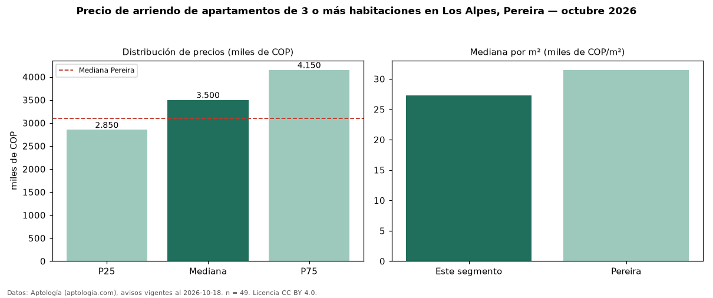

Precio de arriendo de apartamentos de 3 o más habitaciones en Los Alpes, Pereira — octubre 2026
Con 49 avisos vigentes, el canon mediano de apartamentos de 3 o más habitaciones en arriendo en Los Alpes, Pereira es COP 3,50 millones al mes. Frente a la mediana de Pereira para apartamentos de 3 o más habitaciones (COP 3,10 millones), queda 13 % por encima. Por metro cuadrado, la mediana es COP 27.316/m² al mes (n = 46 avisos con área), 13 % por debajo de Pereira (COP 31.461/m²). Son 51 % de los 97 avisos de apartamentos en arriendo de la zona, cuya mediana general es COP 3,10 millones (+13 %). Con el precio por m² de venta del mismo segmento (COP 5,09 millones/m²), la rentabilidad bruta implícita es 6,4 % anual (aproximación con medianas de ofertas distintas). El área mediana anunciada es 125 m². La administración mediana declarada es COP 600.000 al mes (n = 35), aparte del canon. El estrato más frecuente es 6 (92 % de los avisos con estrato). Datos: Aptología (aptologia.com), CC BY 4.0 — https://www.aptologia.com/arriendo/pereira/los-alpes. Archivos: PDF, CSV con las cifras y gráfica PNG.

| Avisos únicos | 49 |
|---|---|
| Percentil 25 | COP 2.850.000 |
| Mediana | COP 3.500.000 |
| Percentil 75 | COP 4.150.000 |
| Mediana por m² | COP 27.315 |
Fuente: avisos vigentes de portales inmobiliarios recopilados por Aptología, deduplicados (mínimo 30 avisos únicos por celda). Precios pedidos, no cerrados. Fecha: 2026-10-18.